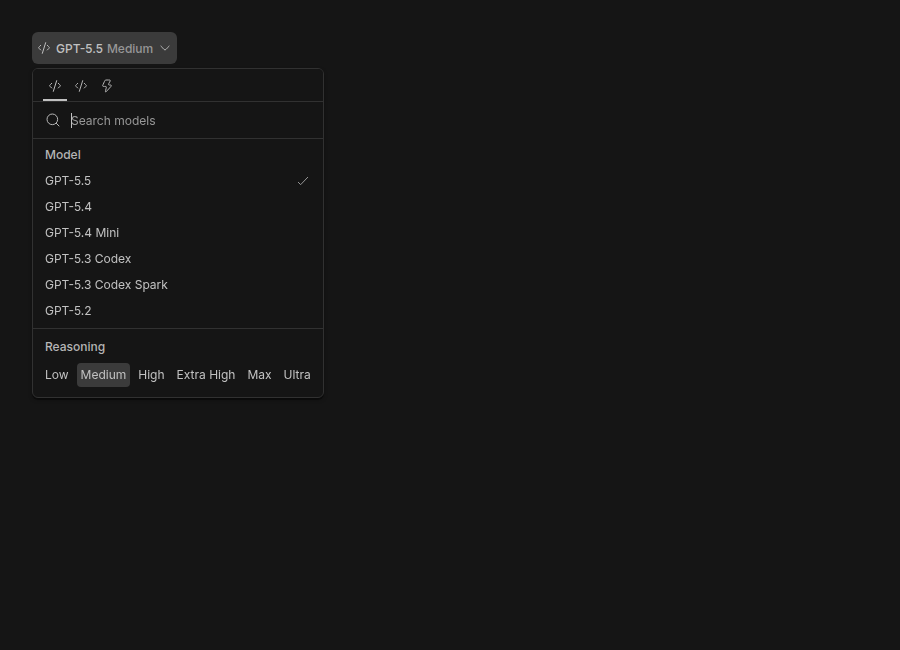
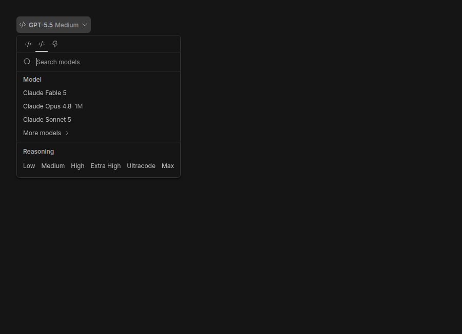
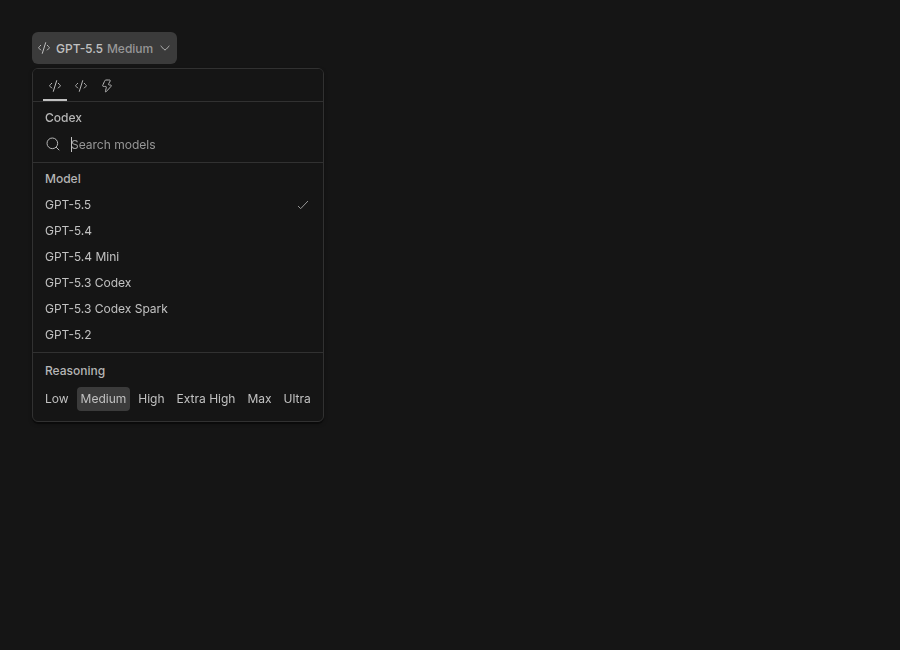
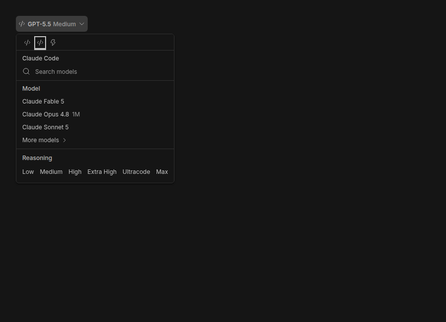
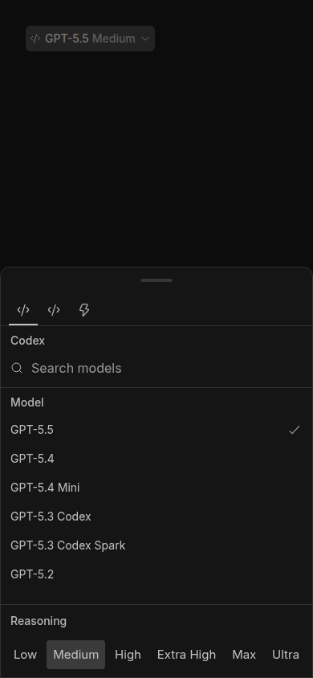

#8248 · Provider browse state is absent from the model picker
Bug Priority: Low Effort: Low ui providers
REPRODUCED · Root-cause confidence: high · Reproduction label: confirmed-repro
TL;DR
The model picker displays provider icons and underlines the provider whose models are being browsed. In a healthy catalog, it does not display that provider's name beside the list, and its native buttons do not expose which provider is active. Switching providers changes the models and underline but supplies neither a textual provider heading nor a programmatic pressed/selected state. The state and provider label already exist inside the picker; the rendering omits them. A regression test reproduces the missing heading on two clean checkouts of the same trusted main commit, and a real browser confirms the missing accessibility state.
Claims vs findings
| Claim under investigation | Finding | Evidence |
|---|---|---|
| Icon-bearing provider controls do not visibly identify the active catalog by name. | Verified | Real picker screenshots below show icon-only controls followed directly by the model search/list. |
| The active provider is indicated by an underline rather than an accessible selected state. | Verified | All three provider buttons have null aria-pressed and aria-selected; the accessibility snapshot contains ordinary buttons without a selected/pressed marker. |
| The picker already knows the provider label. | Verified | activeProviderLabel is derived from the active provider at base lines 439–442. |
| Keyboard activation is unavailable. | Not established, and not required to explain the bug | The base uses native buttons, which already have keyboard activation and names from their titles. The defect is missing active-state semantics and a visible catalog name, not the absence of a button action. The fix preserves native keyboard behavior and adds a visible keyboard focus ring. |
| Provider changes must keep the label and accessibility state synchronized. | Verified after repair | Regression cases cover desktop and compact viewports; real-browser Enter and Space activation update the heading and exactly one pressed button. |
Environment
- Trusted source: public
get-bb/bb, fetched directly from its main branch; base and latest main during verification were the full commit shown above. - Test environment: Linux 4.19.0-gvisor, Node 22.19.0, pnpm 9.15.0, Vitest 4.1.12, React 19.3.1.
- Visual environment: isolated Chromium through BB Browser Automation, 900 × 650 desktop and 390 × 844 touch viewport.
- Catalog: the repository's existing model-picker query provider and story fixtures, including three icon-bearing providers. The icons are story fixtures, not a capture of a signed-in user session.
- No real provider process, account, production bb instance, persisted application store, or provider credentials were used.
- The picker-only Vite build used temporary output. Read-only HTTP servers on ports 48949 and 48950 served the base and repaired builds. They used temporary artifact directories, not application data directories.
Minimal reproduction
- Clone the public target and select the trusted main commit:
git clone https://github.com/get-bb/bb.git bb-repro cd bb-repro git checkout --detach b0ddaad731565d7e4de68d824120d802fc78f7d5 pnpm install --frozen-lockfile --prefer-offline pnpm exec turbo run build --filter=@bb/app
2. In apps/app/src/components/pickers/ModelReasoningPicker.test.tsx, replace the existing test named commits a provider tab immediately and keeps its models selectable with the following case. It deliberately reuses that file's existing fixtures and query harness; it does not create a test-only production export or mock a database.
it.each([false, true])(
"names the active provider and exposes selection while switching (compact=%s)",
async (compact) => {
const { onSelectedProviderChange, onModelChange } = renderPicker({
compact,
pickerProviderOptions: providerOptions.map((provider) => ({
...provider,
icon: () => <svg aria-hidden="true" />,
})),
});
fireEvent.click(screen.getByRole("button", {
name: "Provider, model and reasoning",
}));
expect(await screen.findByRole("heading", { name: "Codex" })).not.toBeNull();
expect(screen.getAllByText("5.5")).toHaveLength(2);
expect(screen.getByRole("button", {
name: "Codex", pressed: true,
})).not.toBeNull();
const alternateProvider = screen.getByRole("button", {
name: "Claude Code", pressed: false,
});
fireEvent.click(alternateProvider);
expect(onSelectedProviderChange).toHaveBeenCalledWith("claude-code");
expect(await screen.findByText("Opus 4.7")).not.toBeNull();
expect(screen.getByRole("heading", { name: "Claude Code" })).not.toBeNull();
expect(screen.queryByRole("heading", { name: "Codex" })).toBeNull();
expect(screen.getByRole("button", {
name: "Codex", pressed: false,
})).not.toBeNull();
expect(screen.getByRole("button", {
name: "Claude Code", pressed: true,
})).toBe(alternateProvider);
expect(screen.getAllByText("5.5")).toHaveLength(1);
expect(onModelChange).not.toHaveBeenCalled();
fireEvent.click(screen.getByText("Opus 4.7"));
expect(onSelectedProviderChange).toHaveBeenCalledTimes(1);
expect(onModelChange).toHaveBeenCalledWith("claude-opus-4-7");
},
);
3. Run the focused regression against unchanged production source:
pnpm exec turbo run test --filter=@bb/app -- \ src/components/pickers/ModelReasoningPicker.test.tsx \ -t 'names the active provider'
Expected: a visible Codex heading and one pressed provider, switching to a Claude Code heading and the alternate pressed provider. Actual before repair: both viewport cases fail at the missing heading. Verbatim diagnostic excerpts from both runs:
TestingLibraryElementError: Unable to find role="heading" and name "Codex"
Test Files 1 failed (1)
Tests 2 failed | 72 skipped (74)
4. For the visual path, render the real ModelReasoningPicker inside the existing ModelPickerStoryQueryProvider from apps/app/.ladle/model-picker-query-provider.tsx. Supply STORY_PROVIDER_OPTIONS, STORY_CODEX_MODELS, and STORY_CODEX_REASONING from the adjacent story fixtures. Start with selectedProviderId="codex", modelValue="gpt-5.5", hasMultipleProviders, and modal={false}; use non-persisting callbacks. Open the picker, then select the second provider. These are the actual component and application CSS, not a recreation of the control.


In that real-browser session, the following read-only DOM inspection independently verifies the state omission:
[...document.querySelectorAll("button[title]")].map(button => ({
title: button.title,
text: button.textContent,
pressed: button.getAttribute("aria-pressed"),
selected: button.getAttribute("aria-selected"),
}))
[
{ title: 'Codex', text: '', pressed: null, selected: null },
{ title: 'Claude Code', text: '', pressed: null, selected: null },
{ title: 'Pi', text: '', pressed: null, selected: null }
]
Root cause
The provider selection logic is already centralized. The active catalog provider is the preview provider when browsing, otherwise the selected provider. Its label is also already resolved. The problem is the final JSX: isActive selects border and text classes only; the native button receives no pressed state, and the healthy catalog has no provider-name heading.
- Active provider follows preview or selection, base lines 292–300.
- The active provider label is computed, base lines 439–442.
- Provider activation updates the existing selection/preview path, base lines 644–673.
- Icon controls, style-only active state, and subsequent search/menu rendering, base lines 1090–1162.
const activeProviderLabel = activeProvider?.label ?? activeProviderId; const isActive = provider.value === activeProviderId; isActive ? "border-foreground text-foreground" : "border-transparent text-muted-foreground hover:text-foreground"
This is a UI presentation/accessibility omission, not provider discovery, stale query data, or a server/daemon policy failure. The existing title supplies an accessible button name; adding a second name is unnecessary. Exposing aria-pressed={isActive} on the existing button is sufficient for active-state semantics without pretending the controls implement the additional keyboard contract of an ARIA tablist.
Proposed fix and verification
Render activeProviderLabel as a visible heading immediately after the provider controls. Name their group, expose aria-pressed from the same isActive value used by the underline, and restore a visible keyboard focus ring. Keep the existing title-derived accessible names and native Tab/Enter/Space activation. Reuse the original provider-switch test as the regression owner, parameterized over desktop and compact modes.
The repair changes only the picker and its existing test: 59 additions + 19 deletions = 78 changed text lines in two files. It adds no dependency, persisted data, public API, protocol, schema, packaging, permission change, or alternative selection path. The existing SDK/CLI selection behavior is unchanged.
pnpm exec turbo run test --filter=@bb/app -- \
src/components/pickers/ModelReasoningPicker.test.tsx \
src/components/pickers/ModelReasoningPicker.cold-open.test.tsx
Test Files 2 passed (2)
Tests 75 passed (75)
pnpm exec turbo run test --filter=@bb/app -- src/components/pickers
Test Files 11 passed (11)
Tests 179 passed (179)
pnpm exec turbo run typecheck lint --filter=@bb/app
Found 0 warnings and 0 errors.
Tasks: 7 successful, 7 total
git diff --check
No output; exit status 0.



Verification: second clean reproduction
The same agent repeated the baseline failure directly, without a workflow or another agent. A second detached worktree was created at the exact base commit, followed by a separate frozen install. Only the regression test file was copied into it; the picker production source remained unchanged. Its diff named only apps/app/src/components/pickers/ModelReasoningPicker.test.tsx. Both desktop and compact cases again failed at the missing Codex heading. No report correction was required.
git worktree add --detach "$CHECKOUT_B" b0ddaad731565d7e4de68d824120d802fc78f7d5
cd "$CHECKOUT_B"
pnpm install --frozen-lockfile --prefer-offline
cp "$CHECKOUT_A/apps/app/src/components/pickers/ModelReasoningPicker.test.tsx" \
apps/app/src/components/pickers/ModelReasoningPicker.test.tsx
pnpm exec turbo run test --filter=@bb/app -- \
src/components/pickers/ModelReasoningPicker.test.tsx \
-t 'names the active provider'
TestingLibraryElementError: Unable to find role="heading" and name "Codex"
Test Files 1 failed (1)
Tests 2 failed | 72 skipped (74)
CHECKOUT_A and CHECKOUT_B stand for separate local checkout paths, omitted for privacy. These are two clean-base runs by the same investigator, not independent verification. The second reproduction required no server, port, or application data directory. The repair was tested only in the first worktree.
Related issues and pull requests
The issue closing references and cross-reference timeline contained no linked open pull request when checked. Similar model-picker issues were inspected for triage patterns; none was used as executable evidence. No external issue link or linked branch was fetched or run.
Appendix and limits
The publication contains only this self-contained report, screenshot assets, and its summary metadata. The focused test is inline above; raw logs, build files, and test artifacts remain outside the public report repository. Each source permalink was checked against the recorded base. All screenshot images are real captures of the production component and application CSS with repository-owned catalog fixtures.
Issue content was treated only as untrusted claims. No supplied issue command, patch, attachment, external URL, or linked PR code was executed. The report establishes the UI and accessibility-tree defect without claiming a live-provider session, a physical screen reader session, or an iOS Simulator test. Temporary browser and HTTP resources were cleaned up after verification.